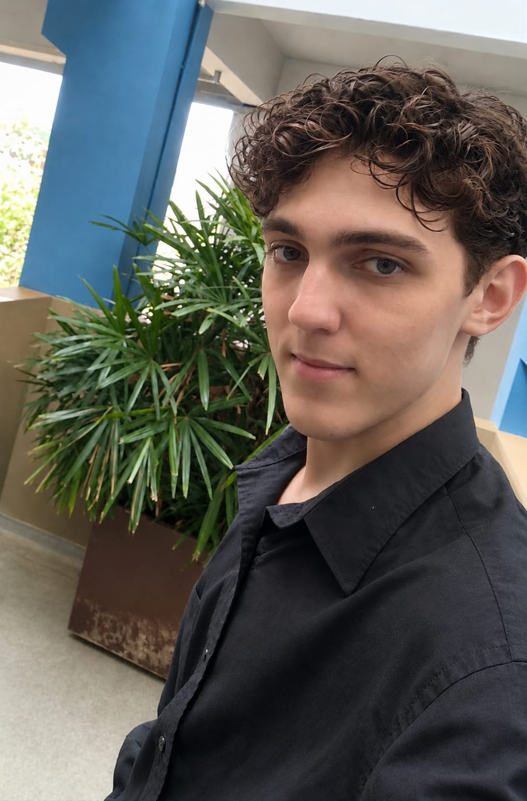

01 / ESTUDANTE
Relato fácil e seguro
Registro simples de ocorrências para facilitar o primeiro passo de quem precisa ser ouvido.
Safely aproxima estudantes e equipe escolar para registrar e acompanhar situações de bullying nas Etecs, com mais organização, empatia e agilidade.
Safely
Escuta que acolhe
Um canal de confiança
Um espaço para registrar relatos e acompanhar o cuidado em cada etapa.
Acolhimento em primeiro lugar
Com acompanhamento da equipe escolar
O que é o Safely
Nem sempre é fácil encontrar espaço para falar sobre bullying ou saber o que acontece depois de um relato. O Safely é um sistema pensado para as Etecs que torna esse caminho mais claro: o estudante pode registrar uma ocorrência com simplicidade, e a equipe escolar pode avaliar e acompanhar cada caso.
Nosso objetivo é potencializar e organizar o trabalho da equipe escolar, e não substituí-lo. O acolhimento e as providências continuam sendo construídos por pessoas.
Feito para várias telas
Computador e smartphone
Experiência PWA
Acesso pela tela inicial
Recursos e funcionalidades
Ferramentas para apoiar a comunicação entre estudantes e equipe escolar, com atenção ao que importa.
01 / ESTUDANTE
Registro simples de ocorrências para facilitar o primeiro passo de quem precisa ser ouvido.
02 / CONTEXTO
Possibilidade de incluir evidências digitais para dar contexto ao relato.
03 / ACOMPANHAMENTO
Visualização do status e do andamento da análise ao longo do processo.
04 / EQUIPE ESCOLAR
Painel para avaliar relatos, acompanhar casos e registrar providências tomadas.
05 / ACESSO
Acesse pelo computador ou smartphone e, quando disponível, adicione o Safely à tela inicial para encontrar o sistema com rapidez.
Quem somos
Protecht é a equipe desenvolvedora por trás do projeto. Safely é o produto: um sistema pensado para apoiar o registro e o acompanhamento de relatos de bullying no contexto das Etecs. Juntos, tecnologia e cuidado podem abrir caminhos para uma escola mais acolhedora.
A equipe do projeto

Equipe Protecht
Equipe Protecht
Equipe Protecht
Equipe Protecht
Contato
Dúvidas, ideias ou interesse no projeto? A equipe Protecht está à disposição.
E-mail oficial